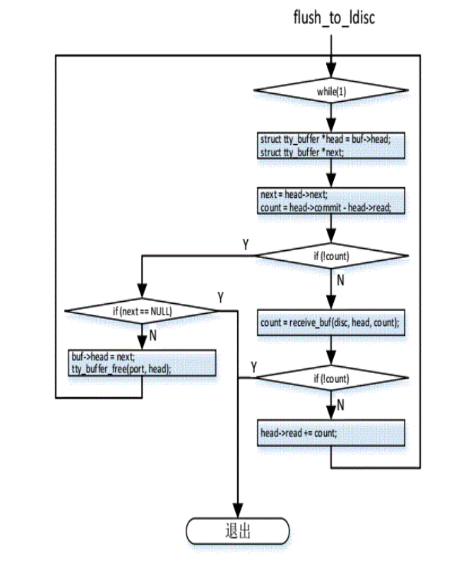

从tty_read函数开始：
static ssize_t tty_read(struct file *file, char __user *buf, size_t count,
loff_t *ppos)
{
int i;
struct inode *inode = file->f_path.dentry->d_inode;
struct tty_struct *tty = file_tty(file);
struct tty_ldisc *ld;
ld = tty_ldisc_ref_wait(tty);
if (ld->ops->read)
i = (ld->ops->read)(tty, file, buf, count);
else
i = -EIO;
tty_ldisc_deref(ld);
if (i > 0)
inode->i_atime = current_fs_time(inode->i_sb);
return i;
}
在之前的open操作中，file的private保存了tty_struct结构。在这里调用file_tty获取此tty_struct结构，然后转到线路规程tty->ldisc->ops->read函数即n_tty_read函数：
static ssize_t n_tty_read(struct tty_struct *tty, struct file *file,
unsigned char __user *buf, size_t nr)
{
unsigned char __user *b = buf;
DECLARE_WAITQUEUE(wait, current);
int c;
int minimum, time;
ssize_t retval = 0;
ssize_t size;
long timeout;
unsigned long flags;
int packet;
do_it_again:
BUG_ON(!tty->read_buf);
c = job_control(tty, file);
if (c < 0)
return c;
minimum = time = 0;
timeout = MAX_SCHEDULE_TIMEOUT;
if (!tty->icanon) {
time = (HZ / 10) * TIME_CHAR(tty);
minimum = MIN_CHAR(tty);
if (minimum) {
if (time)
tty->minimum_to_wake = 1;
else if (!waitqueue_active(&tty->read_wait) ||
(tty->minimum_to_wake > minimum))
tty->minimum_to_wake = minimum;
} else {
timeout = 0;
if (time) {
timeout = time;
time = 0;
}
tty->minimum_to_wake = minimum = 1;
}
}
/*
* Internal serialization of reads.
*/
if (file->f_flags & O_NONBLOCK) {
if (!mutex_trylock(&tty->atomic_read_lock))
return -EAGAIN;
} else {
if (mutex_lock_interruptible(&tty->atomic_read_lock))
return -ERESTARTSYS;
}
packet = tty->packet;
add_wait_queue(&tty->read_wait, &wait);
while (nr)
{
/* First test for status change. */
if (packet && tty->link->ctrl_status) {
unsigned char cs;
if (b != buf)
break;
spin_lock_irqsave(&tty->link->ctrl_lock, flags);
cs = tty->link->ctrl_status;
tty->link->ctrl_status = 0;
spin_unlock_irqrestore(&tty->link->ctrl_lock, flags);
if (tty_put_user(tty, cs, b++)) {
retval = -EFAULT;
b--;
break;
}
nr--;
break;
}/*packet为0，if不执行*/
set_current_state(TASK_INTERRUPTIBLE);/*设置进程为可中断*/
if (((minimum - (b - buf)) < tty->minimum_to_wake) &&
((minimum - (b - buf)) >= 1))
tty->minimum_to_wake = (minimum - (b - buf));
if (!input_available_p(tty, 0))/*输入缓冲区无数据可读*/
{
if (test_bit(TTY_OTHER_CLOSED, &tty->flags)) {
retval = -EIO;
break;
}
if (tty_hung_up_p(file))
break;
if (!timeout)
break;
if (file->f_flags & O_NONBLOCK) {
retval = -EAGAIN;/*非阻塞立即返回*/
break;
}
if (signal_pending(current)) {/*信号唤醒直接返回*/
retval = -ERESTARTSYS;
break;
}
/* FIXME: does n_tty_set_room need locking ? */
n_tty_set_room(tty);
timeout = schedule_timeout(timeout);/*睡眠让出cpu时间*/
BUG_ON(!tty->read_buf);
continue;
}
__set_current_state(TASK_RUNNING);
/* Deal with packet mode. */
if (packet && b == buf) {
if (tty_put_user(tty, TIOCPKT_DATA, b++)) {
retval = -EFAULT;
b--;
break;
}
nr--;
}
if (tty->icanon && !L_EXTPROC(tty)) {/*
/* N.B. avoid overrun if nr == 0 */
while (nr && tty->read_cnt) {
int eol;
eol = test_and_clear_bit(tty->read_tail,
tty->read_flags);
c = tty->read_buf[tty->read_tail];/*从tty->read_buf中取数据*/
spin_lock_irqsave(&tty->read_lock, flags);
tty->read_tail = ((tty->read_tail+1) &
(N_TTY_BUF_SIZE-1));/*移动tail指针*/
tty->read_cnt--;/*数组中已有数据减一*/
if (eol) {
/* this test should be redundant:
* we shouldn't be reading data if
* canon_data is 0
*/
if (--tty->canon_data < 0)
tty->canon_data = 0;
}
spin_unlock_irqrestore(&tty->read_lock, flags);
if (!eol || (c != __DISABLED_CHAR)) {
if (tty_put_user(tty, c, b++)) {/*返回数据到用户空间*/
retval = -EFAULT;
b--;
break;
}
nr--;
}
if (eol) {
tty_audit_push(tty);
break;
}
}
if (retval)
break;
} else {/*非标准模式*/
int uncopied;
/* The copy function takes the read lock and handles
locking internally for this case */
uncopied = copy_from_read_buf(tty, &b, &nr);/*返回数据到用户空间*/
uncopied += copy_from_read_buf(tty, &b, &nr);
if (uncopied) {
retval = -EFAULT;
break;
}
}
if (n_tty_chars_in_buffer(tty) <= TTY_THRESHOLD_UNTHROTTLE) {
n_tty_set_room(tty);
check_unthrottle(tty);
}
if (b - buf >= minimum)
break;
if (time)
timeout = time;
}
mutex_unlock(&tty->atomic_read_lock);
remove_wait_queue(&tty->read_wait, &wait);/*删除等待队列*/
if (!waitqueue_active(&tty->read_wait))
tty->minimum_to_wake = minimum;
__set_current_state(TASK_RUNNING);
size = b - buf;
if (size) {
retval = size;
if (nr)
clear_bit(TTY_PUSH, &tty->flags);
} else if (test_and_clear_bit(TTY_PUSH, &tty->flags))
goto do_it_again;
n_tty_set_room(tty);
return retval;
}
函数n_tty_read利用等待队列，等待队列被唤醒就进入到while循环，将数据以对应的模式发送至用户空间。至于等待队列核何时被唤醒，我们注意到open函数最终调用s3c24xx_serial_startup函数，该函数申请了两个中断rx_irq和tx_irq，其中rx_irq对应中断处理函数为s3c24xx_serial_rx_chars，现在看到这个函数：
static irqreturn_t
s3c24xx_serial_rx_chars(int irq, void *dev_id)
{
struct s3c24xx_uart_port *ourport = dev_id;
struct uart_port *port = &ourport->port;
struct tty_struct *tty = port->state->port.tty;
unsigned int ufcon, ch, flag, ufstat, uerstat;
int max_count = 64;
while (max_count-- > 0)
{
ufcon = rd_regl(port, S3C2410_UFCON);
ufstat = rd_regl(port, S3C2410_UFSTAT);
if (s3c24xx_serial_rx_fifocnt(ourport, ufstat) == 0)
break;
uerstat = rd_regl(port, S3C2410_UERSTAT);
ch = rd_regb(port, S3C2410_URXH);
if (port->flags & UPF_CONS_FLOW) {
int txe = s3c24xx_serial_txempty_nofifo(port);
flag=......
......
uart_insert_char(port, uerstat, S3C2410_UERSTAT_OVERRUN,
ch, flag);
ignore_char:
continue;
}
tty_flip_buffer_push(tty);
out:
return IRQ_HANDLED;
}
这里我重写了一下，理了一下思路：
看到tty_struct结构：
struct tty_struct {
int magic;/*TTY_MAGIC*/
struct kref kref;
struct device *dev;/*driver->dev*/
struct tty_driver *driver;/*driver*/
const struct tty_operations *ops;/*driver->ops*/
int index;
/* Protects ldisc changes: Lock tty not pty */
struct mutex ldisc_mutex;
struct tty_ldisc *ldisc;/*n_tty_ops*/
struct mutex termios_mutex;
spinlock_t ctrl_lock;
/* Termios values are protected by the termios mutex */
struct ktermios *termios, *termios_locked;
struct termiox *termiox; /* May be NULL for unsupported */
char name[64];
struct pid *pgrp; /* Protected by ctrl lock */
struct pid *session;
unsigned long flags;
int count;
struct winsize winsize; /* termios mutex */
unsigned char stopped:1, hw_stopped:1, flow_stopped:1, packet:1;
unsigned char low_latency:1, warned:1;
unsigned char ctrl_status; /* ctrl_lock */
unsigned int receive_room; /* Bytes free for queue */
struct tty_struct *link;
struct fasync_struct *fasync;
struct tty_bufhead buf; /* Locked internally */
int alt_speed; /* For magic substitution of 38400 bps */
wait_queue_head_t write_wait;
wait_queue_head_t read_wait;
struct work_struct hangup_work;
void *disc_data;
void *driver_data;/*uart_state*/
struct list_head tty_files;
#define N_TTY_BUF_SIZE 4096
/*
* The following is data for the N_TTY line discipline. For
* historical reasons, this is included in the tty structure.
* Mostly locked by the BKL.
*/
unsigned int column;
unsigned char lnext:1, erasing:1, raw:1, real_raw:1, icanon:1;
unsigned char closing:1;
unsigned char echo_overrun:1;
unsigned short minimum_to_wake;
unsigned long overrun_time;
int num_overrun;
unsigned long process_char_map[256/(8*sizeof(unsigned long))];
char *read_buf;
int read_head;
int read_tail;
int read_cnt;
unsigned long read_flags[N_TTY_BUF_SIZE/(8*sizeof(unsigned long))];
unsigned char *echo_buf;
unsigned int echo_pos;
unsigned int echo_cnt;
int canon_data;
unsigned long canon_head;
unsigned int canon_column;
struct mutex atomic_read_lock;
struct mutex atomic_write_lock;
struct mutex output_lock;
struct mutex echo_lock;
unsigned char *write_buf;
int write_cnt;
spinlock_t read_lock;
/* If the tty has a pending do_SAK, queue it here - akpm */
struct work_struct SAK_work;
struct tty_port *port;
};
和结构体tty_bufhead:
struct tty_bufhead {
struct work_struct work;
spinlock_t lock;
struct tty_buffer *head; /* Queue head */
struct tty_buffer *tail; /* Active buffer */
struct tty_buffer *free; /* Free queue head */
int memory_used; /* Buffer space used excluding
free queue */
};
在tty_open的tty_init_dev中的initialize_tty_struct函数中，第哦啊用tty_buffer_init函数对tty_struct的buf域进行初始化：
void tty_buffer_init(struct tty_struct *tty)
{
spin_lock_init(&tty->buf.lock);
tty->buf.head = NULL;
tty->buf.tail = NULL;
tty->buf.free = NULL;
tty->buf.memory_used = 0;
INIT_WORK(&tty->buf.work, flush_to_ldisc);
}
结构tty_buffer：
struct tty_buffer {
struct tty_buffer *next;
char *char_buf_ptr;
unsigned char *flag_buf_ptr;
int used;
int size;
int commit;
int read;
/* Data points here */
unsigned long data[0];
};
在中断处理函数中的while循环中，调用了函数uart_insert_char(port, uerstat, S3C2410_UERSTAT_OVERRUN,ch, flag);进行数据追踪，循环执行64次（max_count控制）
数据从寄存器到变量： ch = rd_regb(port, S3C2410_URXH);保存在ch变量中,并将标志放入到flag中。
再调用函数：
static inline void
uart_insert_char(struct uart_port *port, unsigned int status,
unsigned int overrun, unsigned int ch, unsigned int flag)
{
struct tty_struct *tty = port->state->port.tty;/*通过port找到tty结构*/
if ((status & port->ignore_status_mask & ~overrun) == 0)
tty_insert_flip_char(tty, ch, flag);
if (status & ~port->ignore_status_mask & overrun)
tty_insert_flip_char(tty, 0, TTY_OVERRUN);
}
分析函数：
static inline int tty_insert_flip_char(struct tty_struct *tty,
unsigned char ch, char flag)
{
struct tty_buffer *tb = tty->buf.tail;/*此域被初始化NULL在tty_open中*/
if (tb && tb->used < tb->size) {
tb->flag_buf_ptr[tb->used] = flag;
tb->char_buf_ptr[tb->used++] = ch;
return 1;
}
return tty_insert_flip_string_flags(tty, &ch, &flag, 1);
}
函数
int tty_insert_flip_string_flags(struct tty_struct *tty,
const unsigned char *chars, const char *flags, size_t size)
{
int copied = 0;
do {
int goal = min_t(size_t, size - copied, TTY_BUFFER_PAGE);
int space = tty_buffer_request_room(tty, goal);
struct tty_buffer *tb = tty->buf.tail;
/* If there is no space then tb may be NULL */
if (unlikely(space == 0))
break;
memcpy(tb->char_buf_ptr + tb->used, chars, space);
memcpy(tb->flag_buf_ptr + tb->used, flags, space);
tb->used += space;
copied += space;
chars += space;
flags += space;
/* There is a small chance that we need to split the data ove
r
several buffers. If this is the case we must loop */
} while (unlikely(size > copied));
return copied;
}
函数
int tty_buffer_request_room(struct tty_struct *tty, size_t size)
{
struct tty_buffer *b, *n;
int left;
unsigned long flags;
spin_lock_irqsave(&tty->buf.lock, flags);
/* OPTIMISATION: We could keep a per tty "zero" sized buffer to
remove this conditional if its worth it. This would be invisib
le
to the callers */
if ((b = tty->buf.tail) != NULL)
left = b->size - b->used;
else
left = 0;
if (left < size) {
/* This is the slow path - looking for new buffers to use */
if ((n = tty_buffer_find(tty, size)) != NULL) {
if (b != NULL) {
b->next = n;
b->commit = b->used;
} else
tty->buf.head = n;
tty->buf.tail = n;
} else
size = left;
}
spin_unlock_irqrestore(&tty->buf.lock, flags);
return size;
}
再到函数：
static struct tty_buffer *tty_buffer_find(struct tty_struct *tty, siz
e_t size)
{
struct tty_buffer **tbh = &tty->buf.free;/*tty_open中初始化为NULL*/
while ((*tbh) != NULL) {
struct tty_buffer *t = *tbh;
if (t->size >= size) {
*tbh = t->next;
t->next = NULL;
t->used = 0;
t->commit = 0;
t->read = 0;
tty->buf.memory_used += t->size;
return t;
}
tbh = &((*tbh)->next);
}
/* Round the buffer size out */
size = (size + 0xFF) & ~0xFF;
return tty_buffer_alloc(tty, size);
/* Should possibly check if this fails for the largest buffer we
have queued and recycle that ? */
}
函数：
static struct tty_buffer *tty_buffer_alloc(struct tty_struct *tty, si
ze_t size)
{
struct tty_buffer *p;
if (tty->buf.memory_used + size > 65536)
return NULL;
p = kmalloc(sizeof(struct tty_buffer) + 2 * size, GFP_ATOMIC);
if (p == NULL)
return NULL;
p->used = 0;
p->size = size;
p->next = NULL;
p->commit = 0;
p->read = 0;
p->char_buf_ptr = (char *)(p->data);
p->flag_buf_ptr = (unsigned char *)p->char_buf_ptr + size;
tty->buf.memory_used += size;
return p;
}
kmalloc分配了sizeof(struct tty_buffer) + 2 * size大小的内存，此时结构体tty_struct占用一个，其他给了成员unsigned long data[0]，并将此段内存分配为两部分，char_buf_ptr和flag_buf_ptr。
往上看，可以发现函数tty_buffer_request_room将此空间给了tty的buf的head和tail域。
在函数tty_insert_flip_string_flags将第一组数据放入到tty->buf的char_buf_ptr和flag_buf_ptr中，并将buf->tail域的used加1。下一个数据到来，将会执行函数int tty_insert_flip_char的第一个条件语句块，直放入数据到char_buf_ptr和flag_buf_ptr。
数据接收完毕，接下来是tty_flip_buffer_push函数：
void tty_flip_buffer_push(struct tty_struct *tty)
{
unsigned long flags;
spin_lock_irqsave(&tty->buf.lock, flags);
if (tty->buf.tail != NULL)
tty->buf.tail->commit = tty->buf.tail->used;
spin_unlock_irqrestore(&tty->buf.lock, flags);
if (tty->low_latency)
flush_to_ldisc(&tty->buf.work);
else
schedule_work(&tty->buf.work);
}
static void flush_to_ldisc(struct work_struct *work)
{
struct tty_struct *tty =
container_of(work, struct tty_struct, buf.work);/*获取到tty_struct结构*/
unsigned long flags;
struct tty_ldisc *disc;
disc = tty_ldisc_ref(tty);
if (disc == NULL) /* !TTY_LDISC */
return;
spin_lock_irqsave(&tty->buf.lock, flags);
if (!test_and_set_bit(TTY_FLUSHING, &tty->flags)) {
struct tty_buffer *head;
while ((head = tty->buf.head) != NULL) {
int count;
char *char_buf;
unsigned char *flag_buf;
count = head->commit - head->read;/*read域为0*/
if (!count) {
if (head->next == NULL)
break;
tty->buf.head = head->next;
tty_buffer_free(tty, head);
continue;
}
/* Ldisc or user is trying to flush the buffers
we are feeding to the ldisc, stop feeding the
line discipline as we want to empty the queue */
if (test_bit(TTY_FLUSHPENDING, &tty->flags))
break;
if (!tty->receive_room)
break;
if (count > tty->receive_room)
count = tty->receive_room;
char_buf = head->char_buf_ptr + head->read;/*指向head->char_buf_ptr*/
flag_buf = head->flag_buf_ptr + head->read;/*指向head->flag_buf_ptr*/
head->read += count;
spin_unlock_irqrestore(&tty->buf.lock, flags);
disc->ops->receive_buf(tty, char_buf,
flag_buf, count);/*线路规程receive_buf函数*/
spin_lock_irqsave(&tty->buf.lock, flags);
}
clear_bit(TTY_FLUSHING, &tty->flags);
}
/* We may have a deferred request to flush the input buffer,
if so pull the chain under the lock and empty the queue */
if (test_bit(TTY_FLUSHPENDING, &tty->flags)) {
__tty_buffer_flush(tty);
clear_bit(TTY_FLUSHPENDING, &tty->flags);
wake_up(&tty->read_wait);/*唤醒等待队列*/
}
spin_unlock_irqrestore(&tty->buf.lock, flags);
tty_ldisc_deref(disc);
}
处理过程：


当底层驱动接收到“一包”数据后，写入到tty_buffer,使用tty_buffer->data[used++]保存数据（uart_insert_char），保存完毕后，调用tty_flip_buffer_push上报数据，此时使用user指针更新commit；向上层投递数据时，使用read指针（char_buf_ptr在tty_buffer_alloc函数中）投递数据，驱动不仅保存收到的每个字符，还会保存接受字符的状态，如帧错误，溢出等，当前字符与其状态之间的偏移地址size。
针对每个tty_buffer,都会调用 tty_flip_buffer_push->receive_buf，并最终调用线路规程的ld->ops->receive_buf()-->n_tty_receive_buf()进行数据处理。
static void n_tty_receive_buf(struct tty_struct *tty, const unsigned char *cp,
char *fp, int count)
{
const unsigned char *p;
char *f, flags = TTY_NORMAL;
int i;
char buf[64];
unsigned long cpuflags;
if (!tty->read_buf)/*n_tty_open为其开辟空间*/
return;
if (tty->real_raw) {
spin_lock_irqsave(&tty->read_lock, cpuflags);
i = min(N_TTY_BUF_SIZE - tty->read_cnt,
N_TTY_BUF_SIZE - tty->read_head);
i = min(count, i);
memcpy(tty->read_buf + tty->read_head, cp, i);/*将char_buf中的数据复制到read_buf中*/
tty->read_head = (tty->read_head + i) & (N_TTY_BUF_SIZE-1);
tty->read_cnt += i;
cp += i;
count -= i;
i = min(N_TTY_BUF_SIZE - tty->read_cnt,
N_TTY_BUF_SIZE - tty->read_head);
i = min(count, i);
memcpy(tty->read_buf + tty->read_head, cp, i);
tty->read_head = (tty->read_head + i) & (N_TTY_BUF_SIZE-1);
tty->read_cnt += i;
spin_unlock_irqrestore(&tty->read_lock, cpuflags);
} else {
for (i = count, p = cp, f = fp; i; i--, p++) {/*循环根据flag_buf中的flag,对read_buf中数据作相应的操作*/
if (f)
flags = *f++;
switch (flags) {
case TTY_NORMAL:
n_tty_receive_char(tty, *p);
break;
case TTY_BREAK:
n_tty_receive_break(tty);
break;
if (f)
flags = *f++;
switch (flags) {
case TTY_NORMAL:
n_tty_receive_char(tty, *p);
break;
case TTY_BREAK:
n_tty_receive_break(tty);
break;
case TTY_PARITY:
case TTY_FRAME:
n_tty_receive_parity_error(tty, *p);
break;
case TTY_OVERRUN:
n_tty_receive_overrun(tty);
break;
default:
printk(KERN_ERR "%s: unknown flag %d\n",
tty_name(tty, buf), flags);
break;
}
}
if (tty->ops->flush_chars)
tty->ops->flush_chars(tty);
}
n_tty_set_room(tty);
if ((!tty->icanon && (tty->read_cnt >= tty->minimum_to_wake)) ||
L_EXTPROC(tty)) {
kill_fasync(&tty->fasync, SIGIO, POLL_IN);
if (waitqueue_active(&tty->read_wait))
wake_up_interruptible(&tty->read_wait);
}
/*
* Check the remaining room for the input canonicalization
* mode. We don't want to throttle the driver if we're in
* canonical mode and don't have a newline yet!
*/
if (tty->receive_room < TTY_THRESHOLD_THROTTLE)
tty_throttle(tty);
}
函数n_tty_receive_buf()最终将数据存放到tty_struct->read_buf[]中。
在唤醒等待队列后,n_tty_read函数会从read_buf[]中取出数据。
给出比较完整的read过程图（大同小异）：


参考：